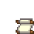

Blumentanz

Der Blumentanz findet an jedem 24. des Frühlings statt. Man nimmt am Tanz teil, indem man den Zundersaftwald, südlich der Farm, zwischen 9:00 Uhr und 14:00 Uhr betritt. Wenn der Tanz beendet ist, kehrt man automatisch zum Hof um 22:00 Uhr zurück.
Der Tanz findet im Westen des Waldes, auf einem Stück Land, das mit einer Brücke mit dem Gebiet südlich des Turm des Zauberers ist, statt. Dieses Gebiet ist nur während des Blumentanzes betretbar.
Während des Festivals ist es möglich mit einem der möglichen Ehepartner zu tanzen. Man muss mit ihm (zweimal) reden und ihn zum Tanz auffordern, sie werden jedoch ablehnen, wenn der Spieler weniger als vier Herzen der Freundschaft mit ihnen hat. Der Tanz wird die Freundschaft mit dem Partner um 1 Herz erhöhen (250 Freundschaftspunkte).
Starten kann man den Tanz beim Bürgermeister Lewis. Sobald der Tanz endet, endet auch das Festival.
Stand
Pierre hat einen Stand, bei dem er die folgenden Sachen zum Verkauf anbietet.
| Bild | Name | Beschreibung | Kaufpreis |
|---|---|---|---|
| Saisonale Deko | Diese Dekoration ändert sich mit jeder Saison. | ||
| Saisonspflanze | Eine Zierpflanze, die sich jede Saison ändert. Sie benötigt kein Wasser. | ||
| Saisonspflanze | Eine Zierpflanze, die sich jede Saison ändert. Sie benötigt kein Wasser. | ||
| Blumenfass | Blumen, die in ein Eichenfass gepflanzt wurden. Blühen im Frühling und Sommer. | ||
 |
Blumenfassrezept | Blaupause für: Blumenfass | |
| Narzisse | Eine traditionelle Frühlingsblume, die ein nettes Geschenk abgibt. | ||
| Löwenzahn | Nicht die schönste Blume, aber die Blätter geben einen guten Salat ab. | ||
| Sammler-Vogelscheuche | Sammle sie alle! (5 von 8) |
Post
Bugs
- Stellt sich der Spieler zwischen Gus und die Blumen im Süden, wird Pam in ihn hinein laufen, was dazu führt, dass er sich nicht mehr bewegen kann.
Trivia
- Technisch gesehen ist es möglich einen Tanzpartner für den Blumentanz schon im ersten Jahr zu bekommen.
- Zum Beispiel, Haley kann auch mit den begrenzten Mitteln im ersten Jahr sehr schnell 4 Herzen bekommen. Sprich hierzu täglich mit ihr, schenke ihr zweimal pro Woche eine Narzisse (am besten hoher Qualität) und mache ihr ein Geburtstagsgeschenk, das gibt nochmals gut Punkte. Sobald sie drei Herzen hat, solltest du ihr Drei-Herzen-Event auslösen. Wenn du alles richtig machst, hat Haley vor dem Fest vier Herzen und du kannst sie schon im ersten Jahr zum Tanz auffordern.
- Auch wenn der Spieler verheiratet ist, kann er trotzdem mit jemand anderem tanzen. Der Ehepartner tanzt eventuell auch mit jemand anderem.
| Festivals | |
|---|---|
| Frühling | Eierfest • Blumentanz |
| Sommer | Luau • Tanz der Mondlichtquallen |
| Herbst | Sterntautaler Volksfest • Geisternacht |
| Winter | Fest des Eises • Nachtmarkt • Fest des Wintersterns |